Plain-language labels: before / after
Plan C, 2026-10-27. Screenshots are the signed-in app at 375px on the 5174/8001 test pair; "after" is the live page with the new text swapped in. Red = now, green = proposed. Critique fixes 1–3 (approved) are applied. Off-limits strings (trend chips, Top Keywords, Similarity Threshold, Repository slider helper/tooltip) are untouched.
In context, 375px
Repository: result badge
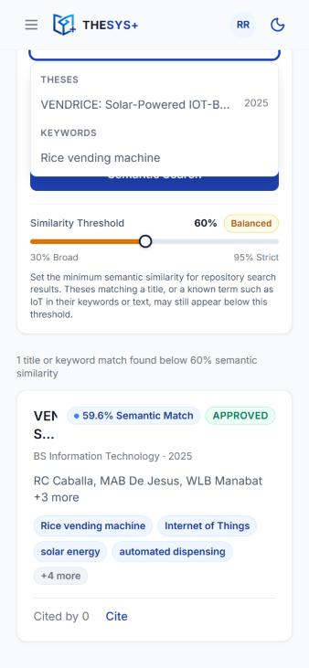
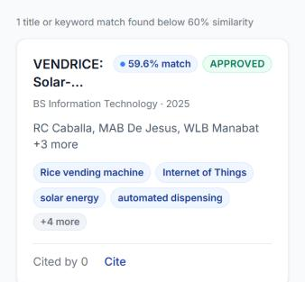
Repository: results header and button
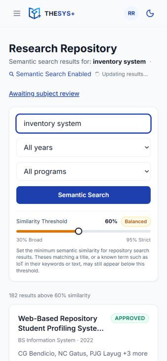
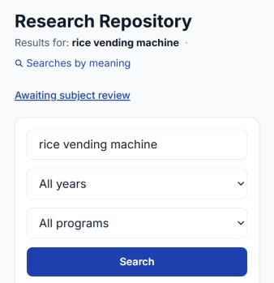
Analytics: stat cards
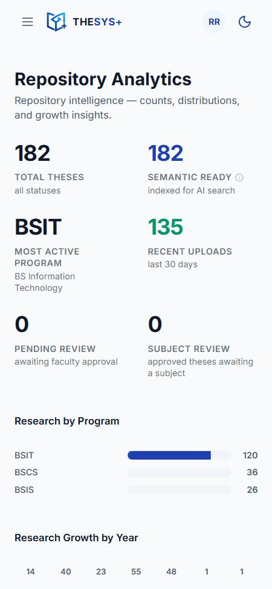
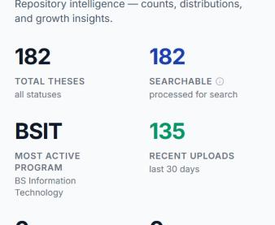
Analytics: summary heading
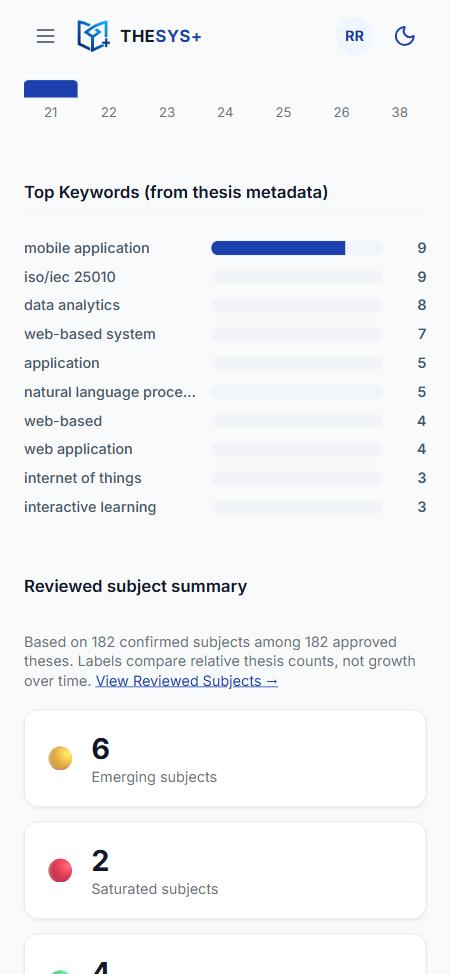
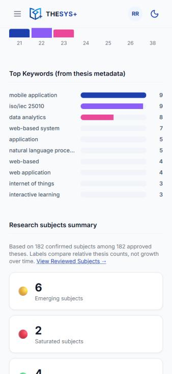
Landing: snapshot and Repository card
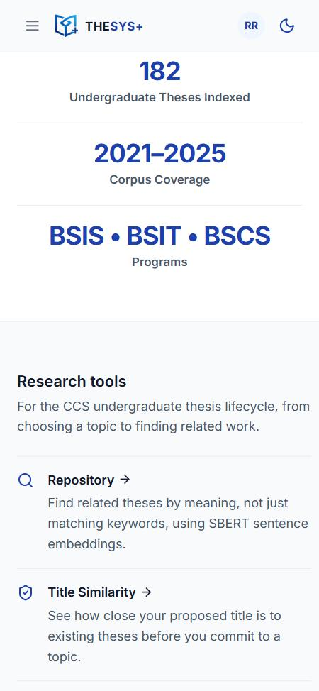
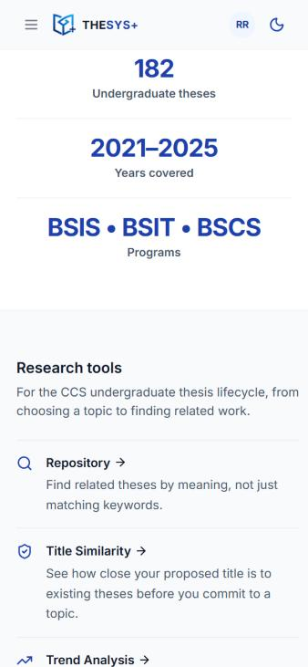
Title Similarity: empty result
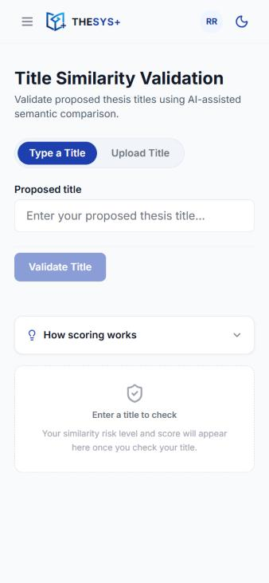
Not shot: Trend Analysis cluster strings (this database is in reviewed-subjects mode, so they don't render), Thesis detail notices (only show when a thesis failed processing), Upload ⓘ name (screen-reader only), Help modal.
Every change
| Where | Context | Now | New |
|---|---|---|---|
LandingPage.jsx:93 | Repository feature card | Find related theses by meaning, not just matching keywords, using SBERT sentence embeddings. | Find related theses by meaning, not just matching keywords. |
LandingPage.jsx:566 | Snapshot stat | Undergraduate Theses Indexed | Undergraduate theses |
LandingPage.jsx:567 | Snapshot stat | Corpus Coverage | Years covered |
AnalyticsDashboardPage.jsx:387 | Stat card label | Semantic Ready | Searchable (critique 1) |
AnalyticsDashboardPage.jsx:389 | Stat card sublabel | indexed for AI search | processed for search (critique 1) |
AnalyticsDashboardPage.jsx:391 | Stat card tooltip | Theses with generated SBERT embeddings that are available for semantic retrieval… | Theses the search can match by meaning, not just exact words. New uploads appear here after processing. |
AnalyticsDashboardPage.jsx:459 | Section heading | Exploratory cluster summary / Reviewed subject summary | Topic groups summary (critique 2) / Research subjects summary |
RepositoryPage.jsx:242 | Result badge | 59.6% Semantic Match | 59.6% match |
RepositoryPage.jsx:246 | Badge tooltip | Cosine similarity score: 0.596 | Matches your search by meaning: 59.6% (critique 3) |
RepositoryPage.jsx:553 | Results header | Semantic search results for: | Results for: |
RepositoryPage.jsx:566 | Results header count | 182 indexed | 182 theses |
RepositoryPage.jsx:574 | Results header marker | Semantic Search Enabled | Searches by meaning |
RepositoryPage.jsx:654 | Search button | Semantic Search (when typed) / Search | Search (always) |
RepositoryPage.jsx:685 | Example chips intro | Try a semantic search: | Try a search: |
RepositoryPage.jsx:741 | Loading state | Searching semantically… | Searching… |
RepositoryPage.jsx:831 | Empty repository | …Approved theses become "Semantic Ready" and are indexed for AI-assisted search. | …Approved theses become searchable by meaning. |
RepositoryPage.jsx:857 | Below-threshold summary | 1 title or keyword match found below 60% semantic similarity | 1 title or keyword match found below 60% similarity |
ThesisDetailPage.jsx:218 | Staff approve toast | Approved, but this thesis could not be indexed for semantic search. Check the server logs. | Approved, but this thesis isn't searchable by meaning yet. Check the server logs. |
ThesisDetailPage.jsx:321 | Staff notice title | Semantic search unavailable for this thesis. | Related theses aren't available for this one yet. |
ThesisDetailPage.jsx:323–324 | Staff notice body | This thesis will not appear in semantic search results or title similarity comparisons. To fix, re-upload the thesis or regenerate its embedding from Django Admin. | This thesis won't appear in search results or title similarity checks. To fix, re-upload the thesis or regenerate its search data from Django Admin. |
TitleSimilarityPage.jsx:462 | Page subtitle | Validate proposed thesis titles using AI-assisted semantic comparison. | See how close your proposed title is to existing theses. (matches the Landing card) |
TitleSimilarityPage.jsx:681 | How scoring works | …compares your proposed title with existing thesis records using SBERT semantic similarity. Higher scores may indicate topic overlap… | …compares your proposed title with existing theses by meaning. A higher score means your topic may overlap with an existing study. |
TitleSimilarityPage.jsx:708 | How scoring works footer | Powered by SBERT semantic comparison | Compares titles by meaning, not just exact words |
TitleSimilarityPage.jsx:757 | Empty result panel | Awaiting validation | Enter a title to check |
TitleSimilarityPage.jsx:771 | Loading state | Comparing title embeddings against the thesis corpus… | Comparing your title with existing theses… |
TrendAnalysisPage.jsx:363, 697, 722 | Group counts | …theses in this cluster | …theses in this group |
TrendAnalysisPage.jsx:369 | Group card | Top keywords (TF-IDF) | Top keywords |
TrendAnalysisPage.jsx:674 | Back link | Back to text clusters | Back to topic groups |
TrendAnalysisPage.jsx:738, 743 | Detail error / empty | …for this cluster… | …for this group… |
TrendAnalysisPage.jsx:899 | View switch | Explore text clusters | Explore topic groups |
TrendAnalysisPage.jsx:914 | Loading state | Loading text clusters… | Loading topic groups… |
TrendAnalysisPage.jsx:949 | Empty state | Add more theses to generate meaningful topic clusters. At least a few approved theses are needed for clustering to work. | Add more theses to form topic groups. At least a few approved theses are needed. |
TrendAnalysisPage.jsx:967 | Stale-link notice | That topic cluster is no longer available — clusters are recomputed as the repository changes… | That topic group is no longer available — groups change as the repository changes… |
TrendAnalysisPage.jsx:982 | Stat card sublabel | Approved corpus | Approved only |
TrendAnalysisPage.jsx:1029 | Section heading | Topic Clusters (8) | Topic groups (8) |
TrendAnalysisPage.jsx:1052 | How this works | …similar meaning together, using Sentence-BERT vectors of their titles, keywords and abstracts. … Groups may change as the corpus changes. | …similar meaning together by comparing their titles, keywords and abstracts. … Groups may change as new theses are added. |
TrendAnalysisPage.jsx:1055, 1057 | Trend rule list | …the average cluster count. | …the average group count. |
UploadThesisModal.jsx:892 | ⓘ button name (screen reader) | About automatic metadata extraction | How we fill in the details for you |
LegalModal.jsx:101 | About: features | Semantic search across the CCS undergraduate thesis repository using SBERT embeddings | Search by meaning across the CCS undergraduate thesis repository |
LegalModal.jsx:102 | About: features | Title similarity validation against the full corpus using cosine similarity and TF-IDF | Title similarity check against every thesis in the repository |
LegalModal.jsx:147, 232, 354 | Privacy / Terms / Help | Thesis metadata (title, abstract, …) | Thesis details (title, abstract, …) |
LegalModal.jsx:162, 256 | Privacy / Terms | semantic search, title similarity validation, … | search by meaning, title similarity checks, … |
LegalModal.jsx:322 | Help: searching | THESYS+ uses semantic search to find conceptually related theses… | THESYS+ searches by meaning to find related theses… |
LegalModal.jsx:327 | Help: threshold | …how strict semantic search results are… | …how strict search results are… ("similarity threshold" stays) |
Kept on purpose
| Where | Context | String | Why kept |
|---|---|---|---|
LegalModal.jsx:110 | About | all-MiniLM-L6-v2 … cosine similarity … clustering | The one technical sentence for the panel |
LegalModal.jsx:96 | About | "Semantic-Based Thesis Retrieval and Topic Trend Analysis System" | The system's official thesis title |
TitleSimilarityPage.jsx:740 | Result panel | Risk level | Already clear; sits in a tiny caps label |
UploadThesisModal.jsx:1017 | Keywords placeholder | AI, OCR, web system | Example keywords a student would type, not UI jargon |
SimilaritySlider.jsx:113 | Default helper | …stricter semantic matches. | Never shown: the only caller passes its own (off-limits) helper |